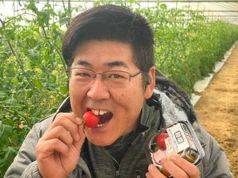
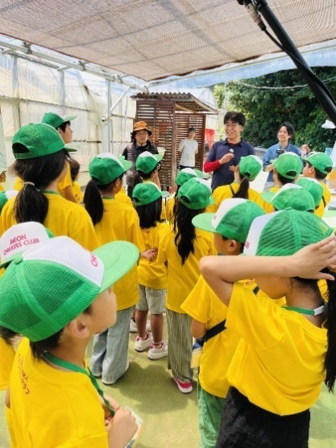
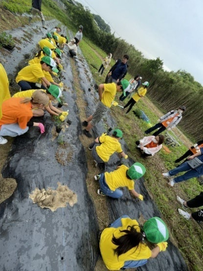
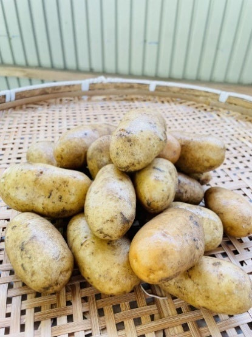
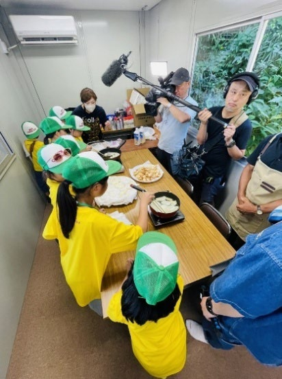
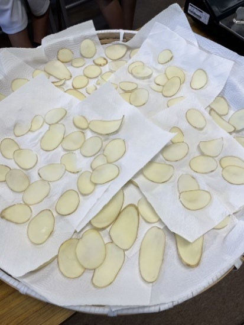

環境への貢献と地域活性化を育む「企業体験農園」の可能性
株式会社ネイチャー × イオン九州株式会社
株式会社ネイチャー × イオン九州株式会社
| 企業名 | 株式会社ネイチャー |
|---|---|
| 業種 | 農業生産法人（体験農園の運営・農産物の生産・販売） |
| 設立 | 2002年 |
| 所在地 | 福岡県北九州市若松区有毛 |
株式会社ネイチャーは、トマトの生産・販売を軸に、15年以上にわたり体験農園を運営してきた農業生産法人です。「ありがとうが増える場所」という理念のもと、地域住民や企業と連携しながら、自然と共生する持続可能な社会の実現に取り組んでいます。
同社の農場は、単なる生産の場ではなく、「豊かさの原点」や「多様性を育む空間」として位置づけられています。参加者は、土の匂いや風の強さ、虫の声などを五感で感じながら自然と向き合い、AIやSNSでは得られない"一次情報"の価値を体感します。こうした体験は、心身のリフレッシュやストレス軽減につながり、人生の満足度を高める機会としても評価されています。

木炭を活用した土壌改良により、病害虫に強い作物づくりを実践。約15品目において、有機肥料・有機農薬を用いた栽培管理を行っています。
市内の飲食店やスーパーから出る食品残渣を回収し、堆肥化して農園で活用。このリサイクル肥料を活用した農園は、事業参加企業グループでも利用されています。廃棄物の削減と土壌の豊かさを同時に実現する循環型モデルです。
地域住民を巻き込んだボランティア参加による共生型農園を運営。企業会員・団体会員の募集も開始し、ネイチャーポジティブ経営に資する活動の場を創出しています。
収穫した野菜を活用した加工品（カレー、ペースト、ジャム等）を商品化。収穫期には農業イベントを開催し、参加者の交流機会を生み出しています。
地域社会への貢献と、企業のネイチャーポジティブな取組の具現化を目指し、株式会社ネイチャーの体験農園が、イオン九州株式会社の小中学生体験学習プログラム「イオンチアーズクラブ」の指定農園として認定されました。次世代を担う子どもたちに農業体験を通じて自然との共生を促し、食育にも貢献することを目的とした協創プロジェクトです。
2025年度には、ジャガイモの植え付けから収穫までを一貫して体験する試験的な取組を実施。子どもたちは自ら土に触れ、作物の成長を見守り、収穫したジャガイモをその場で調理して食べるという貴重な経験をしました。この一連の体験は、参加した子どもたちや保護者から非常に高い評価を受け、次年度に向けてはさらに内容を充実させる予定です。



本プロジェクトの成果は、子どもたちが体験を通して得た学びや気づきをレポートにまとめ、令和7年12月に開催されたイオン福津店での対話型環境イベントで発表されました。子どもたち自身の言葉で語られた気づきは、自然や農業に対する新たな価値観を創出し、次世代へ自然と共生する大切さを伝える貴重な機会となりました。


本事例は、企業が農業体験を通じて地域や自然と関わりながら、教育機会の創出や心身のリフレッシュを実現する好事例です。企業活動と社会・環境貢献を無理なく結びつけることで、地域との信頼関係の構築や、持続可能な取組の広がりにつながる可能性を示しています。
株式会社ネイチャーでは、これまで培ってきた体験農園のノウハウを活かし、今後も地域や企業と連携した取組を継続・発展させていく予定です。体験農園という場を通じて、多様な立場の人々が自然と関わり、学び合う機会が広がることが期待されています。
本ネットワークとしても、こうした実践事例を共有することで、ネイチャーポジティブな取組が地域全体へ波及していくことを目指しています。
※取組に関心をお持ちの企業・団体の方は、北九州ネイチャーポジティブネットワーク事務局までお問い合わせください。